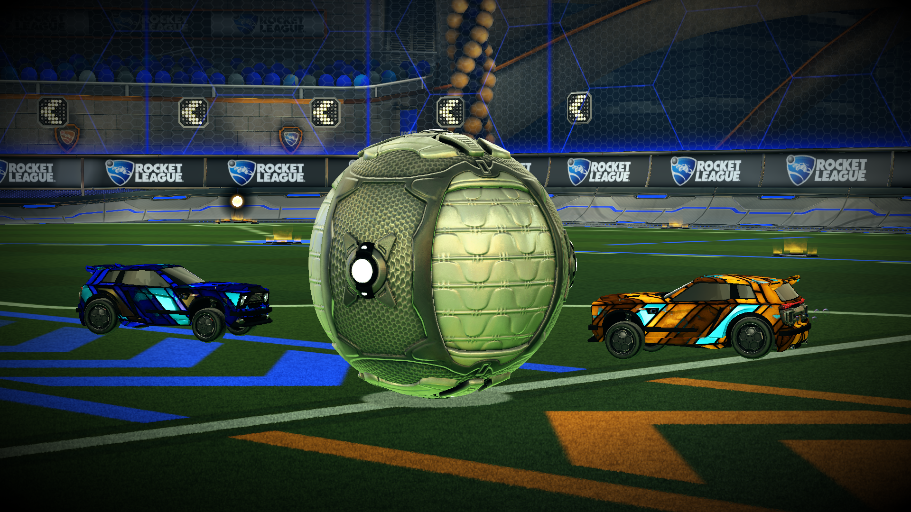
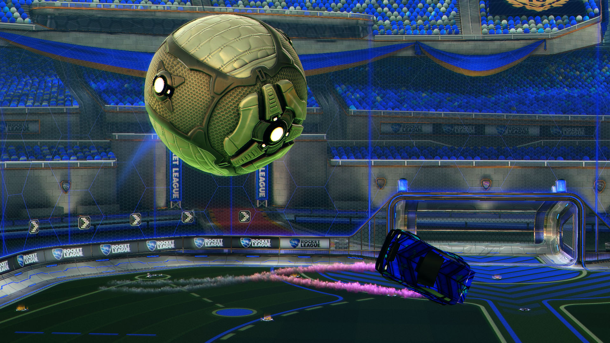
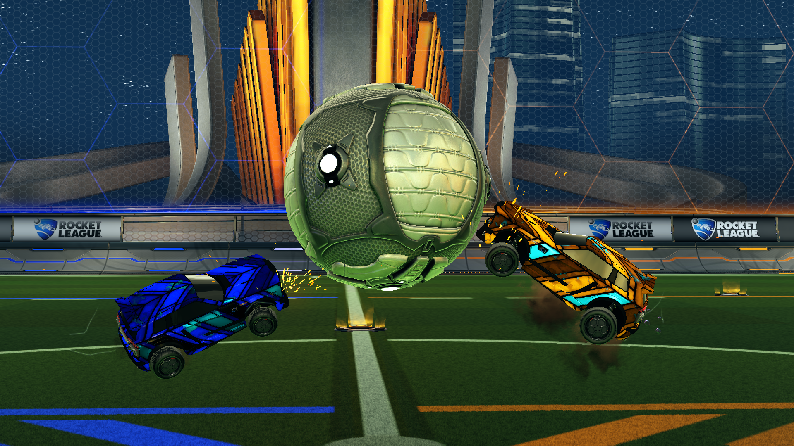

01
Posicionamiento
Revisar la posición del auto ayuda a reconocer si una jugada tenía apoyo. También permite observar cuándo conviene retroceder en lugar de seguir el balón.
Una repetición permite revisar decisiones que pasan muy rápido durante el partido.

Revisar la posición del auto ayuda a reconocer si una jugada tenía apoyo. También permite observar cuándo conviene retroceder en lugar de seguir el balón.

La cantidad de boost influye en las opciones disponibles. Una revisión puede mostrar recorridos innecesarios o momentos en los que era posible recoger pads pequeños.

No todos los toques necesitan ser fuertes. Observar el espacio y la posición del rival ayuda a distinguir entre controlar, pasar o despejar el balón.